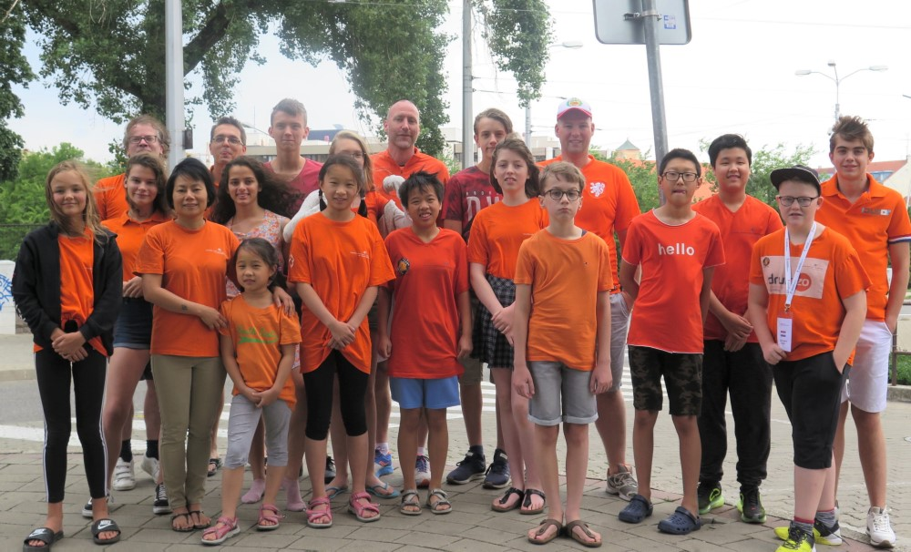
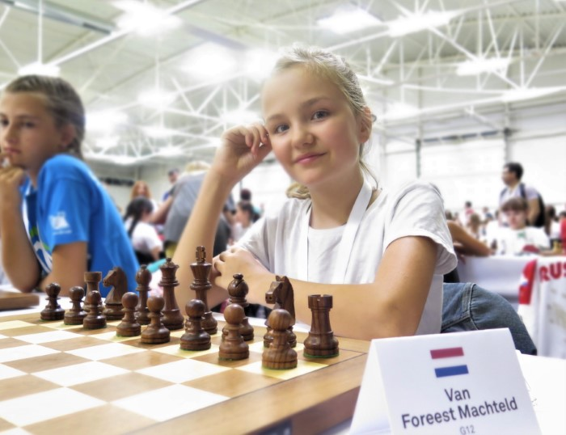
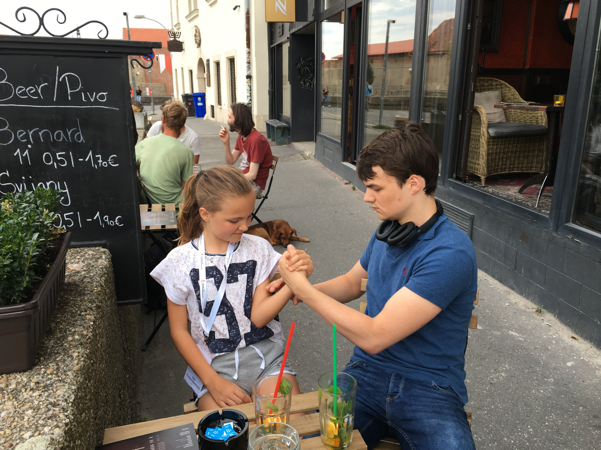
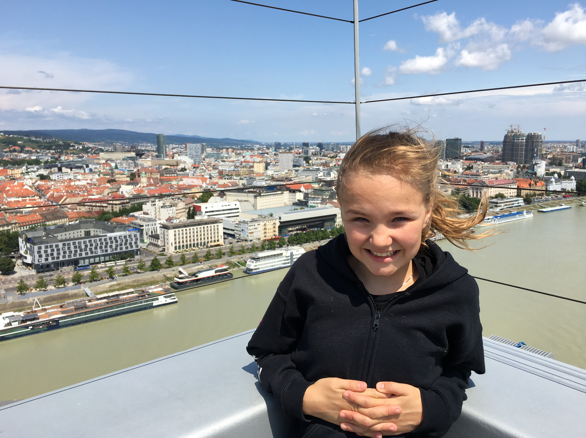

Europees Kampioenschap Schaken 2019!!Het europees kampioenschap 2019 begon op 1 augustus en eindigde 11 augustus. Het was in Bratislava, de hoofdstad van Slowakije. Mijn vader ging mee. Op de dag van vertrek stonden we op om ongeveer 7.30. We moesten lopen naar het station, want het is niet zo ver, en mijn moeder kon ons niet brengen met de auto. Daar namen we eerst de bus naar Assen omdat de trein niet reed tussen Groningen en Assen. Daarna zijn we met de trein naar Schiphol gegaan, en zonder vertraging aangekomen. De rest van de groep was daar ook. En toen gingen we vliegen. Alle spelers en coaches Ik vind het altijd mooi om door de wolken te vliegen. Het is ook leuk als je bij het opstijgen een bocht maakt, als je tenminste aan de goede kant zit, zodat je alle huizen kan zien. Nadat we geland waren in Wenen werden we opgehaald door mensen in gele shirts en die brachten ons naar de bus. Het was lekker warm bij de bushalte (en in Nederland regende het). In de bus zag ik het meisje uit Noorwegen tegen wie ik geschaakt had (remise) bij het WK in Santiago de Compostella. Mijn vader maakte een praatje met de moeder van dat meisje. Een uur later waren we bij ons hotel, Hotel Ibis in Bratislava. Onze kamer was prima; het eten was iets minder want er was alleen rijst met vlees, en ik ben vegetarier. (De andere dagen was er wel steeds veel sla bij het ontbijt en de lunch, dus voor de rest van de tijd viel het allemaal wel mee.) Het hotel was dicht bij de speelzaal, ongeveer 1.5 km. We hadden elke dag een leuke wandeling over de Donau. In de eerste ronde speelde ik tegen Arora Tashika uit Engeland. Ze speelde d4, maar ik speelde de opening niet zo goed. Ik offerde een kwal voor aanval en kreeg een sterke aanval. Daarna verpestte ik mijn aanval door de dames en de torens te ruilen. Ik kreeg wel een paar pionnen, miste weer de winst, en dus werd het remise. Niet zo'n goed begin dus.  In mijn tweede ronde kreeg ik een Sveshnikov. Mijn tegenstander verzwakte haar stelling zodat ik vrij makkelijk kon winnen. De dag erna gingen mijn vader en ik lunchen bij een Turkse zaak. Daar at ik een broodje falafel, dat is gestampte kikkererwten uit de frituur, erg lekker. De baas van de zaak kwam uit Afghanistan. Die heeft me geleerd wat `dank je wel' is in Urdu. De derde en vierde ronde won ik ook. Daarna gingen mijn vader en ik naar het cafe om de hoek van het hotel. Ik kreeg ijsthee, een groot glas thee met pepermunt en sinaasappel en citroen, en mijn vader dronk bier. We hadden dus allebei wat we wilden. Mijn broer was er ook. Nu hij Nederlands kampioen schaken is wil hij graag ook nog kampioen armdrukken worden. Helaas was hij met armdrukken nog veel te sterk voor mij. Maar met schaken ga ik nog wel een keer van hem winnen.  Daarna gingen we naar het hotel. Ik ging slapen. Omdat ik niet in slaap kan vallen met licht, ging mijn vader weer terug naar het cafe met een boek. De vijfde ronde moest ik tegen Alexandra die nog alles gewonnen had. Zij speelde de Najdorf en ik kwam goed te staan maar toen blunderde ik en verloor ik de partij. Dat was jammer want nu kon ik het toernooi niet meer winnen. De volgende ronde speelde ik een mooie partij die ik won. De volgende dag had ik roze yogurt met bessen als ontbijt. Voor de partij gingen we naar de ufo, een soort gebouwtje boven op de grote brug over de Donau. De ufo staat op een paal van de brug. Het duurt best lang voordat je boven bent; het is 90 meter hoog. Toen we boven waren moesten we nog met twee trappen omhoog. Het waaide daar hard en de ufo swiepte een beetje heen en weer. Het was heel mooi, je zag twee kanten van de stad. Aan de ene kant van de stad zag je een snelweg, en alleen maar flats van beton. De andere kant van de stad met het kasteel was erg mooi. Toen we uitgekeken waren gingen we weer twee trappen naar beneden. Er is ook een restaurant in de ufo. Ik was zo aardig om te betalen: mijn vader nam een bier en ik een ijsje (een grote). Bovenop de ufo In de zevende ronde moest ik tegen een ander Nederlands meisje Wendy Huang. Het werd een scherpe partij, waarbij haar aanval beter was dan de mijne zodat ik verloor. Gelukkig won ik de laatste twee rondes nog zodat ik uiteindelijk 6.5 punt haalde uit 9. De terugreis ging allemaal goed. 's Ochtends maakten mijn vader en ik nog een wandeling door de stad. Om 12h kwam de bus. Het vliegen ging allemaal goed, de trein ook. Mijn moeder kwam ons halen bij het station in Groningen. We liepen naar huis en om 9 uur was ik weer thuis. Opruimen, en naar bed. Het was een leuk, spannend en leerzaam toernooi, en ik wil graag weer meedoen met een nieuw EK. Dana, Wendy en ik schaakten een goed toernooi: alle drie in de top 10. Eline behaalde de zesde plaats bij de meisjes t/m 14. Volgend jaar gaan we gewoon allemaal de top drie halen! |